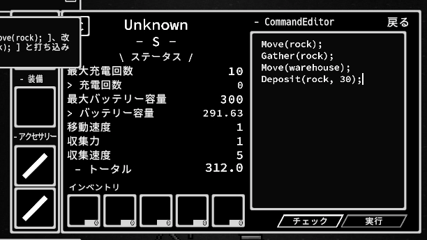
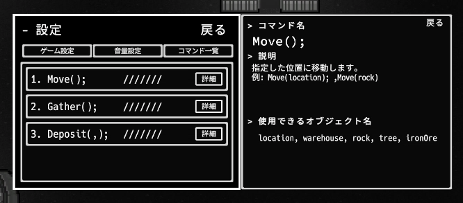
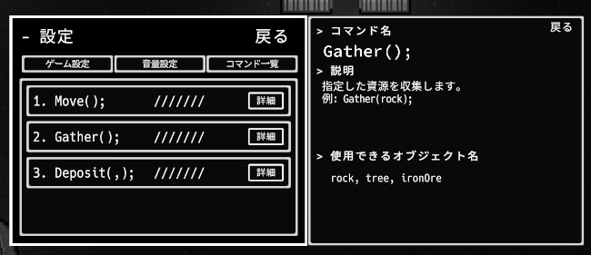
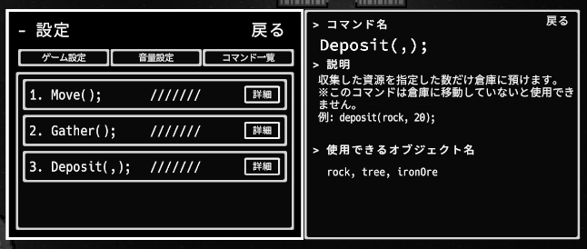
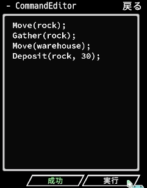
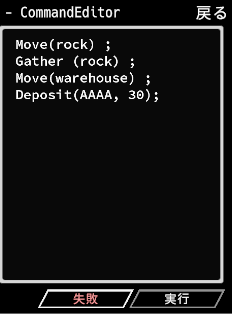
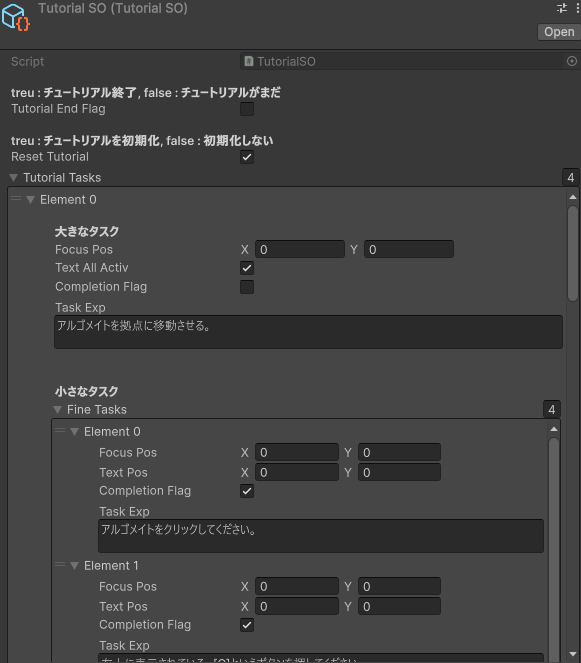
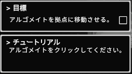

コマンド入力
拠点運営シミュレーション
AlgomateColony
プレイヤーがロボット「アルゴメイト」にコマンドを与え、資源を集めて拠点を発展させるシミュレーションゲームです。Move・Gather・Depositを組み合わせ、直接操作ではなく作業手順を組み立てます。
作品の要点
ゲームの軸
資源の採集・運搬をコマンドでつなぎ、ロボットの作業手順を考えて拠点を成長させます。
チームでの担当
清水日向多が企画・プログラミング、田島侑來がデザインを担当しました。
技術上の見どころ
コマンド入力の検証・逐次実行を、探索・移動・採集・格納を担うロボット処理につなぐ構成です。
紹介動画
プロジェクト情報
- プラットフォーム: PC
- ジャンル: コマンド入力 / 拠点運営シミュレーション
- 開発期間: 2024/12 - 2025/02 (上旬)
- 開発体制・担当: チーム開発。清水日向多: 企画・プログラミング / 田島侑來: デザイン
- 使用技術: Unity (6000.0.23f1) / C# / Git Bash / GitHub
ゲーム概要
アルゴメイトを選び、複数行の命令を入力して資源の採集・運搬を指示します。プレイヤーがキャラクターを直接動かすのではなく、作業の順序を考え、実行される様子を見守るゲームです。
01 — ロボットに指示
アルゴメイトを選び、Move・Gather・Depositを組み合わせて入力します。
02 — 資源を運ぶ
資源の場所へ移動して採集し、倉庫の近くで指定した素材と数量を格納します。
03 — 拠点を発展
拠点パネルで必要素材を確認し、条件を満たしてレベルアップを目指します。
ゲーム画面・コマンド
入力欄に作業の順序を書き、実行結果や拠点の状態を確認する画面です。

命令を組み立て、作業の流れをつくる
基本コマンドを順番に記述し、資源の移動から拠点の成長までをつなぎます。現行仕様資料では、コマンド行を検証してから順番に実行する構成が確認されています。
Move(rock);
Gather(rock);
Move(warehouse);
Deposit(rock, 30);
3つの基本コマンド



入力の結果と拠点画面



チュートリアル
Unity上のタスク設定と、プレイヤーに表示される案内画面を紹介します。


ゲーム設計・処理フロー
企画上のプレイループと、GitHubの現行仕様資料から確認できる処理の流れを分けて紹介します。
プレイの基本ループ（企画・チュートリアル）
- ロボットを選ぶアルゴメイトを選択し、命令対象を決める
- 手順を入力するMove・Gather・Depositを順に記述する
- 資源を運ぶ採集した素材を倉庫へ格納する
- 拠点を成長させる必要素材をそろえてレベルアップを目指す
コマンドがロボットの行動になるまで（コード上の構成）
- 定義を読み込むCommandLoaderがResourcesのJSONから候補を取得
- 入力を検証するCommandHandlerが各行と引数を確認
- 行ごとに実行するRobotCommandExecuteが入力行を順番に処理
- 行動へつなぐRobotControllerが探索・移動・採集・格納の処理を呼び分ける
チュートリアルデータに記録された手順
- 拠点へ移動ロボットをlocationへ移動させる
- 石を採集するrockへ移動してGatherで採集する
- 倉庫へ格納するwarehouseへ移動し、Depositで石を預ける
- 拠点をレベルアップ必要素材をそろえてチュートリアル完了を目指す
経路生成と局所的な障害物回避（部分実装）
- 目的地を設定Moveコマンドに応じて移動先を決める
- 経由点を生成直線を10分割したWaypointを作る
- 周囲を検知移動方向へRaycastを行う
- 局所的に回避ObstacleAvoidanceHelperで候補方向を選ぶ
WaypointとRaycastを用いた移動処理
技術・開発状況
コマンド定義と入力検証
Resources内のJSONからコマンド候補を読み込み、CommandHandlerが入力行を検証します。
逐次実行と状態管理
RobotCommandExecuteが命令を順番に進め、RobotControllerがロボットの行動状態を管理します。
探索・移動・採集・格納
RobotSearch、RobotMovement、RobotGather、RobotDepositが対象検索から資源処理までを分担します。
拠点レベルとデータ
ScriptableObjectでレベルごとの必要素材・解放情報を定義し、LocationControllerが在庫表示とレベルアップUIを扱います。
施設パネル
FacilityManagerが設定・ロボット・拠点・倉庫などの各Canvas表示を切り替えます。
プロトタイプの範囲
現行の基本コマンドはMove・Gather・Depositです。READMEではif・forなどの高度な構文、加工施設での生産、エネルギー管理、クエストや交易、新しいコマンドの研究を今後の要素として挙げています。画面やデータの一部が存在する機能も、実行処理が完成しているとは限りません。
移動処理の実装例は、以下の動画で紹介しています。
GitHubの技術資料
ストーリー設定
荒廃した惑星に降り立ったあなたは、稼働限界が近いロボットたちを再起動し、失われた文明の技術を集めながら新たな拠点を築きます。
しかし、惑星の環境は過酷で、資源もエネルギーも不足気味です。限られた命令をどう組み合わせるかで、コロニーの未来は大きく変わります。
研究を進めるごとにロボットは賢くなり、単純作業だった運営はやがて巨大な自動化システムへと進化していきます。